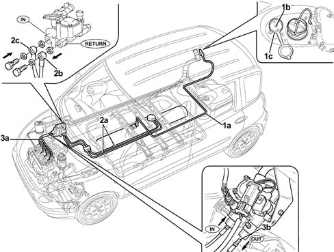
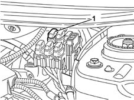

1043A02 lpg system lines pipe draining operations
- Path
- Procedures > 10 ENGINE UNIT > 1043 LGP TANK AND PIPES > 1043A gpl tank > 1043A02 lpg system lines pipe draining operations
- Kind
- repair procedure (removal / refitting; the operation number is the code)
- Applies to
- engines: 1.6 16v; all production periods; only with equipment: GPOWER
- Interactive page
- https://sloeber94.github.io/elrnDB-fMltpl/en/#/2891490
Applies to: engines: 1.6 16v; all production periods; only with equipment: GPOWER and Euro 3
In the case of maintenance operations or the replacement of LPG system components which involve disconnecting the pipes, the section of the circuit concerned must be treated as described below.
Position the vehicle outside of the workshop in an open environment at least 4 metres away from other vehicles and electrical equipment for safety reasons.
Wear the special 'helmet with a visor' and 'winter gloves' illustrated previously which meet the UNI standards listed (see GROUP 10 index)
Wait for the engine to cool down.
1. In the case of operations to the components in the section (1a) of the LPG circuit (from the filler to the tank), drain the pipe pressing the ball (1b) on the LPG filler (1c).
2. In the case of operations to the components in the section (2a) of the GPL circuit (from the tank to the pressure regulator) drain the LPG in the supply and return pipes to the pressure regulator acting on the adjustable connectors (2b) and (2c).
3. In the case of operations on the components in the section (3a) of the LPG circuit (from the pressure regulator to the injectors), drain the LPG in the supply pipe to the injectors acting on the connector (3b).

Applies to: engines: 1.6 16v; all production periods; only with equipment: GPOWER and Euro 3
Once the section of the pipe concerned has been drained, wait at least 5 minutes before returning the vehicle to the workshop.
1. Disconnect the 7.5A protective fuse for the solenoid valves and the LPG pump in order to avoid starting the engine in LPG mode with the pipes refillig as a result.

Applies to: engines: 1.6 16v; all production periods; only with equipment: GPOWER and Euro 3
Return the vehicle to the workshop (running on petrol) and proceed with the necessary disconnection operations.
Topics that link to this page (6)
- 1043A06 gpl tank complete with submerged fuel tank and valve unit r r
- 1043A30 gpl filler fitting r r
- 1043A34 filler pipe from fitting to gpl tank r r
- 1043B20 intermediate fitting of delivery or return pipes between gpl resevior and pressure regulator r r
- 1043B42 pressure regulaton for gpl supply complete with delivery and return lines from intermediate connector r r
- 1057B66 gpl injector unit with connection pipes to pressure regulator r r